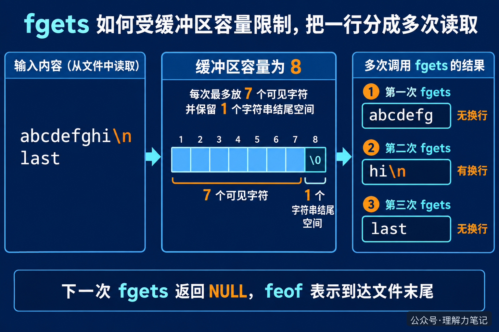

很多人第一次用 fgets 时，会把它理解成“读一整行”。于是缓冲区只有 8 个字节，却拿它去读几百字节的配置项，看到的结果就会和预期不一样：字符串没有出错，换行符却还没出现，下一次读取又从中间接上了。
结论：
fgets每次最多读取n - 1个字符，并为字符串结尾的\0留出一个位置。它遇到换行就停止并保留换行符，遇到容量上限也会停止。所以一行很长时，必须多次调用fgets，直到读到换行或确认到达文件末尾。
这篇文章的实验运行在 macOS 14.8.8、Apple clang 16.0.0，未在 Linux 主机实测；接口规则按 C17 和 POSIX 文档核对。
这篇文章怎么读？ 先看 8 字节缓冲区的实际输出，再看为什么没有换行符时不能急着认为这一行已经结束。
把一行文字想成一条很长的水流，fgets 手里的字符数组就是一个小杯子。杯子装满时，fgets 先把这一杯交给调用者；水流还没结束，下一次再接着舀。这个类比只说明“容量会造成分段”，实际判断仍然要看字符串里有没有换行符。
下面的程序把缓冲区设成 8 字节。它不打印整段文本，只报告每次拿到多少字符，以及这次是否拿到了换行，方便观察边界。
编译并输入一行很长、最后一行没有换行符的内容：
实际输出：
第一块是 abcdefg，正好占满 7 个字符，最后一个位置留给 \0，所以还没有读到换行。第二次才读到 hi\n。最后的 last 没有换行符，第三次返回它；再调用一次时，fgets 返回 NULL，feof 变成真。

fgets 返回非空指针，只能说明这次读到了一段字符串，不能说明完整的一行已经结束。判断一段内容是否结束，要看缓冲区最后一个字符是不是 \n：
\n，这一行在本次调用中结束；\n，可能是行还没读完，也可能是文件最后一行本来就没有换行符；fgets 返回 NULL 后，才能结合 feof 确认文件已经读完；如果 ferror 为真，则是读取失败。因此，固定缓冲区读取长行时，调用者需要把没有换行的片段继续拼接起来。如果业务要求“一次得到完整的一行”，可以使用 POSIX 的 getline，让库负责扩容；这属于下一篇的主题，本篇只先把 fgets 的边界看清楚。
还有一个容易漏掉的细节：fgets 会把读到的换行符放进数组。后续代码如果不希望字符串末尾带换行，需要在确认读到换行后自行删除它；删除换行和判断一行是否读完，是两个不同动作。
getline 的区别。本文为公众号「理解力笔记」原创。转载请联系作者，并保留出处。